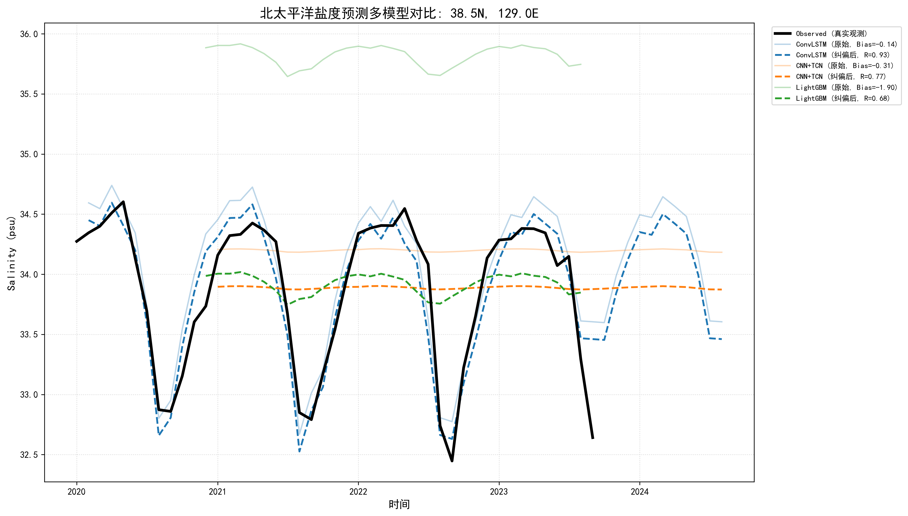
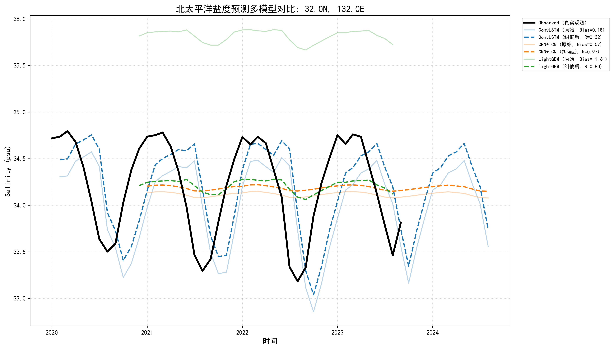
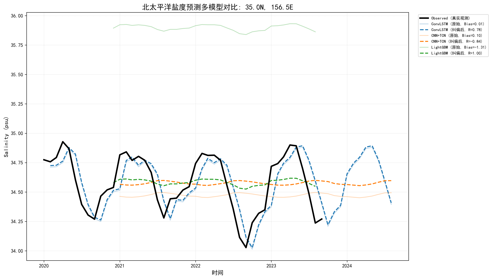
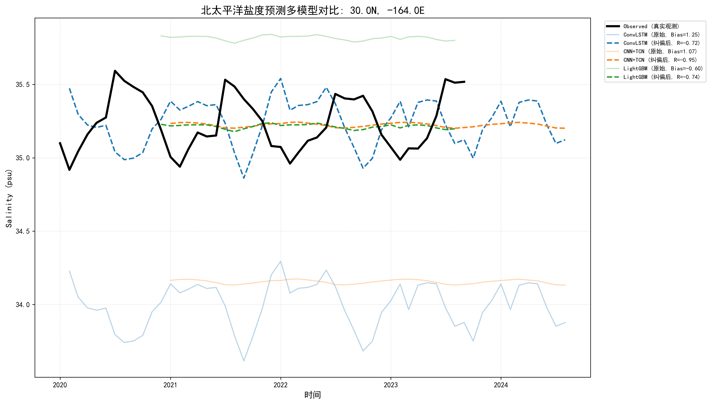

MAE 和 RMSE 反映的是模型在整体数值层面的误差水平。
从结果来看，各模型误差处于同一量级，说明模型在数值预测上是稳定的。
但这类指标并不能反映时间波动结构是否被保留，
因此我们进一步通过时间序列对比分析模型的波动捕捉能力。




分析：通过时空耦合建模，在卷积操作中显式保留空间梯度信息，并利用门控循环结构刻画时间依赖性。
波动表现：准确重建了盐度的振幅结构与相位演化。对由平流、扩散及混合过程驱动的非线性演化具有极高的信号保真度。
LightGBM：本质为点值回归。在 RMSE 目标函数引导下产生均值回归倾向，虽整体误差最优，但系统性削弱了对极值事件的刻画能力。
CNN-TCN：多层时间卷积产生显著的低通滤波效应，模型偏向于保留低频背景态，而将中高频物理波动视为噪声加以抑制。